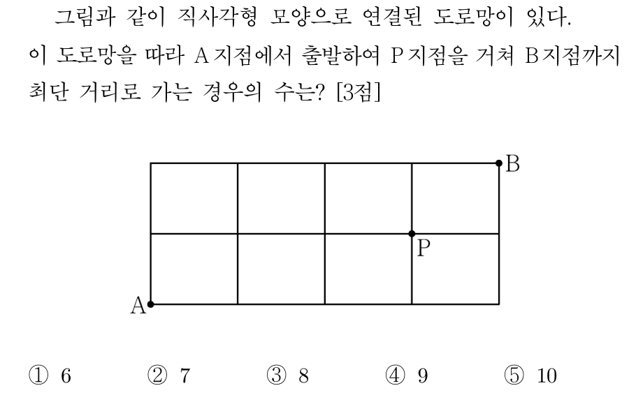
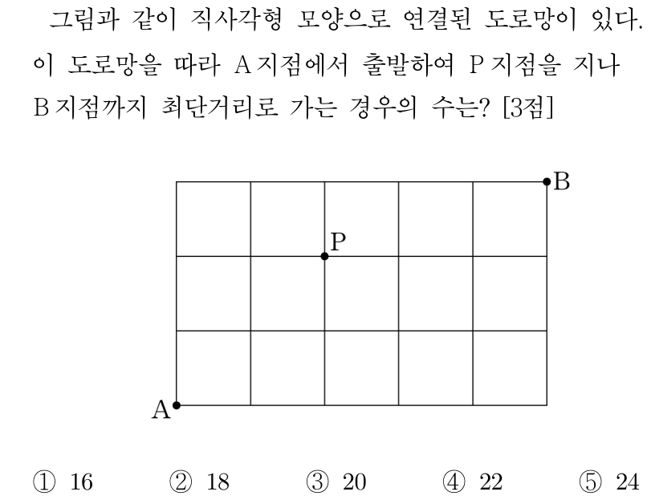
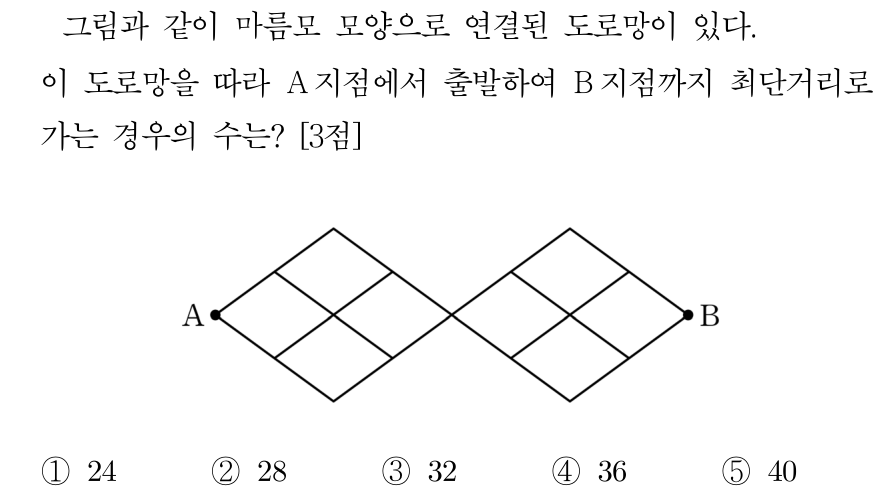
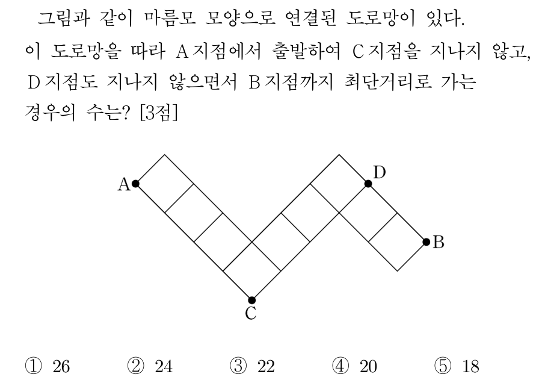

확률과 통계 3점 세트 01
2027 6월 확통 27번1. 두 집합 $X=\{1, 2, 3, 4, 5\}$, $Y=\{1, 2, 3\}$에 대하여 $X$에서 $Y$로의 함수 $f$ 중 $f(1)\times f(2)\ne 4$를 만족시키는 함수 $f$의 개수는? [3점]
① 189 ② 198 ③ 207 ④ 216 ⑤ 225
2025 6월 확통 26번2. 문자 $a$, $b$, $c$, $d$ 중에서 중복을 허락하여 4개를 택해 일렬로 나열하여 만들 수 있는 모든 문자열 중에서 임의로 하나를 선택할 때, 문자 $a$가 한 개만 포함되거나 문자 $b$가 한 개만 포함된 문자열이 선택될 확률은? [3점]
① $\frac{5}{8}$ ② $\frac{41}{64}$ ③ $\frac{21}{32}$ ④ $\frac{43}{64}$ ⑤ $\frac{11}{16}$
2024 9월 확통 24번3. 
2023 6월 확통 27번4. 네 문자 $a$, $b$, $X$, $Y$ 중에서 중복을 허락하여 6개를 택해 일렬로 나열하려고 한다. 다음 조건이 성립하도록 나열하는 경우의 수는? [3점]
(가) 양 끝 모두에 대문자가 나온다.
(나) $a$는 한 번만 나온다.
① 384 ② 408 ③ 432 ④ 456 ⑤ 480
2023 수능 확통 24번5. 숫자 1, 2, 3, 4, 5 중에서 중복을 허락하여 4개를 택해 일렬로 나열하여 만들 수 있는 네 자리의 자연수 중 4000 이상인 홀수의 개수는? [3점]
① 125 ② 150 ③ 175 ④ 200 ⑤ 225
2022 예시 확통 27번6. 집합 $X=\{1, 2, 3, 4\}$에 대하여 다음 조건을 만족시키는 모든 함수 $f:X\to X$의 개수는? [3점]
(가) $f(1)+f(2)+f(3)\ge 3f(4)$
(나) $k=1, 2, 3$일 때 $f(k)\ne f(4)$이다.
① 41 ② 45 ③ 49 ④ 53 ⑤ 57
2021 6월 가형 4번7. 6개의 문자 $a$, $a$, $a$, $b$, $b$, $c$를 모두 일렬로 나열하는 경우의 수는? [3점]
① 52 ② 56 ③ 60 ④ 64 ⑤ 68
2018 6월 나형 7번8. 
2018 9월 가형 10번9. A, A, A, B, B, C의 문자가 하나씩 적혀 있는 6장의 카드가 있다. 이 카드를 모두 한 번씩 사용하여 일렬로 임의로 나열할 때, 양 끝 모두에 A가 적힌 카드가 나오게 나열될 확률은? [3점]
① $\frac{3}{20}$ ② $\frac{1}{5}$ ③ $\frac{1}{4}$ ④ $\frac{3}{10}$ ⑤ $\frac{7}{20}$
2017 수능 가형 5번10. 숫자 1, 2, 3, 4, 5 중에서 중복을 허락하여 네 개를 택해 일렬로 나열하여 만든 네 자리의 자연수가 5의 배수인 경우의 수는? [3점]
① 115 ② 120 ③ 125 ④ 130 ⑤ 135
2016 6월 B형 9번11. 서로 다른 종류의 연필 5자루를 4명의 학생 A, B, C, D에게 남김없이 나누어 주는 경우의 수는? (단, 연필을 받지 못하는 학생이 있을 수 있다.) [3점]
① 1024 ② 1034 ③ 1044 ④ 1054 ⑤ 1064
2014 6월 B형 5번12. 1부터 6까지의 자연수가 하나씩 적혀 있는 6장의 카드가 있다. 이 카드를 모두 한 번씩 사용하여 일렬로 나열할 때, 2가 적혀 있는 카드는 4가 적혀 있는 카드보다 왼쪽에 나열하고 홀수가 적혀 있는 카드는 작은 수부터 크기 순서로 왼쪽부터 나열하는 경우의 수는? [3점]
① 56 ② 60 ③ 64 ④ 68 ⑤ 72
2013 9월 가형 5번13. 
2013 수능 가형 5번14. 
2012 수능 가형 5번15. 흰색 깃발 5개, 파란색 깃발 5개를 일렬로 모두 나열할 때, 양 끝에 흰색 깃발이 놓이는 경우의 수는? (단, 같은 색 깃발끼리는 서로 구별하지 않는다.) [3점]
① 56 ② 63 ③ 70 ④ 77 ⑤ 84
2011 수능 가형 6번16. 어느 행사장에는 현수막을 1개씩 설치할 수 있는 장소가 5곳이 있다. 현수막은 A, B, C 세 종류가 있고, A는 1개, B는 4개, C는 2개가 있다. 다음 조건을 만족시키도록 현수막 5개를 택하여 5곳에 설치할 때, 그 결과로 나타날 수 있는 경우의 수는? (단, 같은 종류의 현수막끼리는 구분하지 않는다.) [3점]
(가) A는 반드시 설치한다.
(나) B는 2곳 이상 설치한다.
① 55 ② 65 ③ 75 ④ 85 ⑤ 95
2008 수능 나형 9번17. 1부와 2부로 나누어 진행하는 어느 음악회에서 독창 2팀, 중창 2팀, 합창 3팀이 모두 공연할 때, 다음 두 조건에 따라 7팀의 공연 순서를 정하려고 한다.
(가) 1부에는 독창, 중창, 합창 순으로 3팀이 공연한다.
(나) 2부에는 독창, 중창, 합창, 합창 순으로 4팀이 공연한다.
이 음악회의 공연 순서를 정하는 방법의 수는? [3점]
① 18 ② 20 ③ 22 ④ 24 ⑤ 26
2005 예비 가형 21번18. 세 주사위 A, B, C를 동시에 던질 때 나오는 눈의 수의 곱이 짝수인 경우의 수를 구하시오. [3점]
2004 수능 인문계 14번19. 세 숫자 1, 2, 3을 중복 사용하여 네 자리의 자연수를 만들 때, 1과 2가 모두 포함되어 있는 자연수의 개수는? [3점]
① 58 ② 56 ③ 54 ④ 52 ⑤ 50
2003 모평 예체능계 15번20. 8개의 전구가 있다. 전구마다 스위치가 달려 있어서 스위치를 누르면 전구가 켜지고 다시 누르면 꺼진다. 전구가 모두 꺼져 있는 상태에서 학생 A가 임의로 3개의 스위치를 한 번씩 누르고 간 후, 학생 B도 임의로 3개의 스위치를 한 번씩 누르고 갔다. 이때, <보기>의 설명 중 옳은 것을 모두 고르면? [3점]
<보기>
ㄱ. 꺼져 있는 전구의 수는 짝수이다.
ㄴ. 2개의 전구만 켜지는 경우는 없다.
ㄷ. 4개의 전구가 켜지는 경우가 있다.
① ㄱ ② ㄴ ③ ㄱ, ㄷ ④ ㄴ, ㄷ ⑤ ㄱ, ㄴ, ㄷ
확률과 통계 3점 세트 01 — 정답
| 번호 | 정답 | 출처 | 성취기준 |
|---|
| 1 | ④ | 2027 6월 확통 27번 | 12확통01-01 |
| 2 | ③ | 2025 6월 확통 26번 | 12확통01-01 |
| 3 | ③ | 2024 9월 확통 24번 | 12확통01-01 |
| 4 | ③ | 2023 6월 확통 27번 | 12확통01-01 |
| 5 | ② | 2023 수능 확통 24번 | 12확통01-01 |
| 6 | ⑤ | 2022 예시 확통 27번 | 12확통01-01 |
| 7 | ③ | 2021 6월 가형 4번 | 12확통01-01 |
| 8 | ⑤ | 2018 6월 나형 7번 | 12확통01-01 |
| 9 | ② | 2018 9월 가형 10번 | 12확통01-01 |
| 10 | ③ | 2017 수능 가형 5번 | 12확통01-01 |
| 11 | ① | 2016 6월 B형 9번 | 12확통01-01 |
| 12 | ② | 2014 6월 B형 5번 | 12확통01-01 |
| 13 | ④ | 2013 9월 가형 5번 | 12확통01-01 |
| 14 | ② | 2013 수능 가형 5번 | 12확통01-01 |
| 15 | ① | 2012 수능 가형 5번 | 12확통01-01 |
| 16 | ① | 2011 수능 가형 6번 | 12확통01-01 |
| 17 | ④ | 2008 수능 나형 9번 | 12확통01-01 |
| 18 | 189 | 2005 예비 가형 21번 | 12확통01-01 |
| 19 | ⑤ | 2004 수능 인문계 14번 | 12확통01-01 |
| 20 | ③ | 2003 모평 예체능계 15번 | 12확통01-01 |